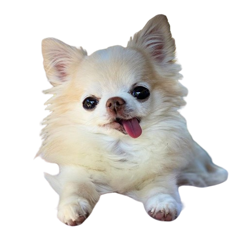
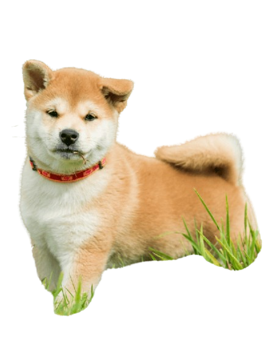
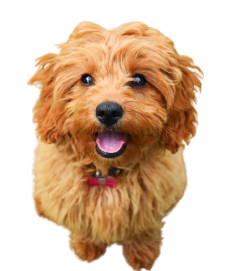

*notice* the content below is AI generated
🐾 Why Dogs Are the Best Pet: Unconditional Love and Adventure
Thinking about welcoming a furry friend into your life? While every pet is special, dogs hold a unique
and cherished place in the hearts of millions. They aren't just pets; they become loyal family members,
offering a combination of companionship, motivation, and pure joy that is unmatched.
❤️ The Magic of Unconditional Love
One of the most defining qualities of a dog is their capacity for unwavering devotion.

-
Always Happy to See You: Whether you've been gone for five minutes or five hours,
the enthusiastic tail-wags and joyful greetings are a daily reminder that you are
the most important person in their world.
-
Zero Judgment: Dogs don't care about your bad hair day, your career setback, or
your mistakes. They offer comfort and acceptance without fail.
-
Emotional Support on Four Legs: Studies show that interacting with dogs can lower
stress and anxiety. A simple cuddle session can boost your oxytocin levels, the "love hormone."
🏃 Your Built-in Health and Adventure Partner
Dogs are fantastic catalysts for a healthier, more active lifestyle.

-
Motivation to Move: A dog needs a walk, and that means you need a walk. They pull
you away from the screen and into the fresh air, turning mundane exercise into a fun,
shared adventure.
-
Social Magnets: Walking a dog often leads to chance encounters with neighbors and other
dog owners. They are excellent icebreakers and great for expanding your social circle.
-
Routine and Structure: Caring for a dog requires daily routines—feeding, walking, and
playtime. This structure can be incredibly grounding and beneficial for mental well-being.
🧠 Smart, Trainable, and Versatile Companions
From playful goofballs to focused service animals, dogs have incredible cognitive abilities.

-
Easy to Train: With consistency and positive reinforcement, dogs can learn a vast \
array of commands, from basic obedience to complex tricks and tasks. This trainability
makes them adaptable to many lifestyles.
-
Natural Protectors: Many breeds possess an innate instinct to protect their home and family,
offering a sense of security and peace of mind.
-
The Best Playmates: Whether it's a game of fetch in the park, tug-of-war in the living room,
or simply a snuggle on the couch, dogs are always ready for interaction, bringing laughter
and playfulness into every day.